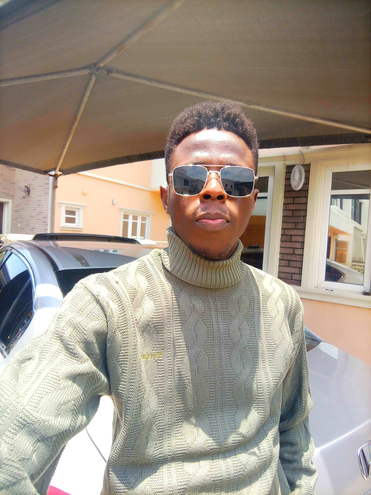

Full Name: Ibukunola Oreoluwa Mabawonku
Age: 25
Sex: Male
State of Origin: Ogun
Course of Study: Backend Engineering
ALT School ID: ALT/SOE/025/0272
Biography
Hello! My name is Mabawonku Ibukunola Oreoluwa, and I am an aspiring full-stack engineer with a deep passion for technology and problem-solving. From a young age, I’ve always been fascinated by how things work, and this curiosity led me to pursue a career in engineering. I am a recent graduate in computer engineering, and I’m passionate about solving complex problems through technology. I believe that with the right tools, knowledge, and determination, I can make a meaningful impact in the world.
Over the years, I have cultivated a strong foundation in programming, problem-solving, and team collaboration, all of which have prepared me for the challenges of engineering. I enjoy continuously learning and growing as a developer, and I’m excited to be part of a community that strives to innovate and build solutions that make a difference.
In addition to my work as an engineer, I also have a creative side – I love making EDM music in my spare time. Music allows me to express myself in a different way, and it’s a great outlet for my creativity. You can check out my Tiktok page here, and my recently released track on Youtube, and my
Why I Joined the Program
I joined the ALT School Africa program because I wanted to expand my knowledge and skills in engineering, particularly in the areas of software development (Backend Engineering). I believe the hands-on learning experience and exposure to real-world projects will help me grow as an engineer and contribute meaningfully to society.
Goals for the School of Engineering Program
My goals for the School of Engineering program are:
- To gain a deep understanding of engineering principles, particularly in software development (Backend Engineering).
- To develop practical skills by working on real-world projects and collaborating with fellow students and mentors.
- To build a strong network of professionals and peers who share my passion for technology and innovation.
- To eventually apply my engineering knowledge to solve meaningful problems in my community and beyond.
- To bring my ideas to life.